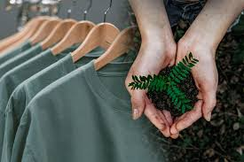
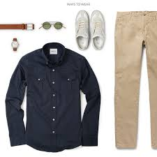
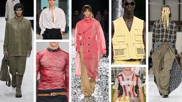
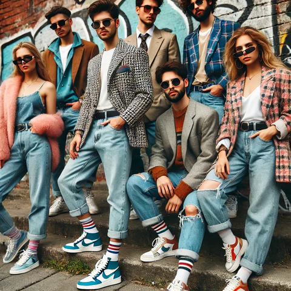

Get ahead of the curve with a look at the biggest trends for the upcoming year.
Eco-friendly clothing and accessories are on the rise, with a focus on recycled materials and minimal waste.
Functional clothing with a stylish twist, think cargo pants, combat boots, and oversized jackets.
Bright and bold neon colors are making a comeback, adding a pop of fun to any outfit.
The 80s are back, with a focus on bold prints, bright colors, and statement accessories.
